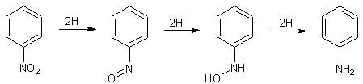
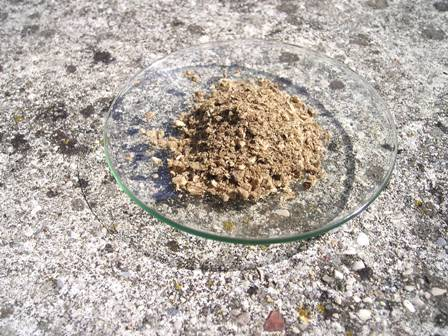
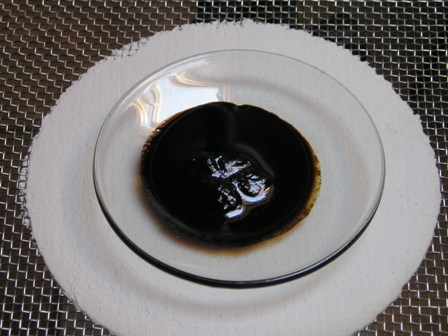

In ambiente acido e fortemente riducente, i nitrocomposti aromatici portano alla formazione della corrispondente ammina; è noto per esempio che il classico metodo di produzione dell'anilina parte dal nitrobenzene che viene ridotto con ferro e acido cloridrico diluito.
Il processo di riduzione non è unico e risente fortemente delle condizioni e del pH di reazione, tanto che usando ambienti riducenti intermedi si possono isolare prodotti diversi.
Semplificando, si può dire che la riduzione completa del nitrobenzene può essere così riassunta:

la reazione procede dal nitrobenzene, al nitrosobenzene, alla fenilidrossilammina, all'anilina.
In ambiente alcalino si possono formare anche azoxibenzene, azobenzene, idrazobenzene, quindi la situazione pratica se vogliamo è molto variegata.
Ho trovato una procedura su un vecchio testo (Cumming, 1937) per la sintesi della fenilidrossilammina C6H5-NH-OH, procedura del tutto attendibile perchè ho verificato che è quasi identica a quella del Vogel, che è indubbiamente una delle massime Bibbie dell'organica sperimentale.
Materiale occorrente
- nitrobenzene C6H5-NO2
- ammonio cloruro NH4Cl
- zinco polvere Zn
- cloruro di sodio
- etere
- In un becker da 250 ml, sciogliere 6 g di NH4Cl in 250 ml di acqua e aggiungere 12 g (10 ml) di nitrobenzene.
(Ricordo che questa sostanza va maneggiata con le necessarie cautele, essendo decisamente tossica).
Porre su agitatore magnetico e aggiungere in quattro porzioni distanziate di un quarto d'ora un totale di 18 g di zinco in polvere.
La reazione Zn/NH4Cl è esotermica e la temperatura si innalza verso i 50°e in una mezz'oretta complessiva il processo di riduzione dovrebbe completarsi e l'odore forte e caratteristico del nitrobenzene dovrebbe sparire.
Nel mio caso, avendo usato della polvere di zinco molto vecchia, la temperatura stentava a salire ed ho lasciato in agitazione per un paio di ore, senza riuscire ad eliminare del tutto l'odore di mandorle amare.
Sicuramente la riduzione non è stata completa, ma essendo questa una sintesi "provvisoria", come poi vedremo, mi sono accontentato della situazione non essendo questa volta importante il problema della resa finale.
Filtrare ora alla pompa l'abbondante residuo di zinco e suoi ossidi derivati dalla reazione; il filtrato è un liquido giallastro un po' torbido.
La fenilidrossilammina si separa da questo liquido saturandolo con NaCl (ne servono 35 g ogni 100 ml), inizialmente sotto forma di un precipitato flocculento molto voluminoso di colore giallastro.
Filtrare su buchner, ridisciogliere nella minima quantità di acqua calda (solub. 1/20), raffreddare in ghiaccio e e riprecipitare ancora saturando con NaCl.
Per separarla completamente dal cloruro di sodio residuo sciogliere in etere, decantare ed evaporare.
Ho ottenuto 5 g di prodotto (47%), in aghetti giallastri marroncini che rapidamente scuriscono all'aria.


Purtroppo la fenilidrossilammina è estremamente reattiva e si può conservare per un po' di tempo solo se purissima (altrimenti va rapidamente a finire come si vede nella foto sopra), quindi sarebbe comunque destinata ad una sorte "provvisoria".
L'impiego sicuramente più interessante che se ne potrebbe fare è la sintesi del Cupferron, partendo dalla fen.idr.amm. appena prodotta.
Il cupferron è il sale di ammonio della N-nitrosofenilidrossilammina, sostanza, come tutte le nitrosoammine, proprio niente affatto salutare...
Comunque sarebbe un bellissimo reattivo per il rame e per il ferro, ma la sua sintesi presuppone l'impiego di grandi quantità di ammoniaca gassosa proveniente da bombola e quindi tale lavoro è del tutto improponibile per un home-lab.
Conclusione: accontentiamoci di vederla per un po', questa fenilidrossilammina, poi una volta nella sua bottiglietta sarà libera di degradarsi a tutto ciò che vorrà, senza alcun rimpianto da parte mia.
L'ho fatta solo per curiosità e sapendo in partenza della sua vita effimera, e che già domani sarà schifosamente scura e fra una settimana un liquido nero, del quale a dire il vero mi piacerebbe assai conoscere l'ignota composizione derivata dai suoi prodotti di ossidazione.
15 commenti